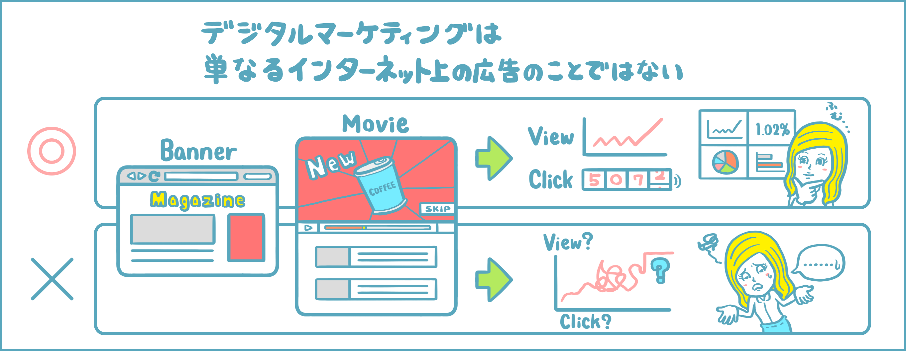
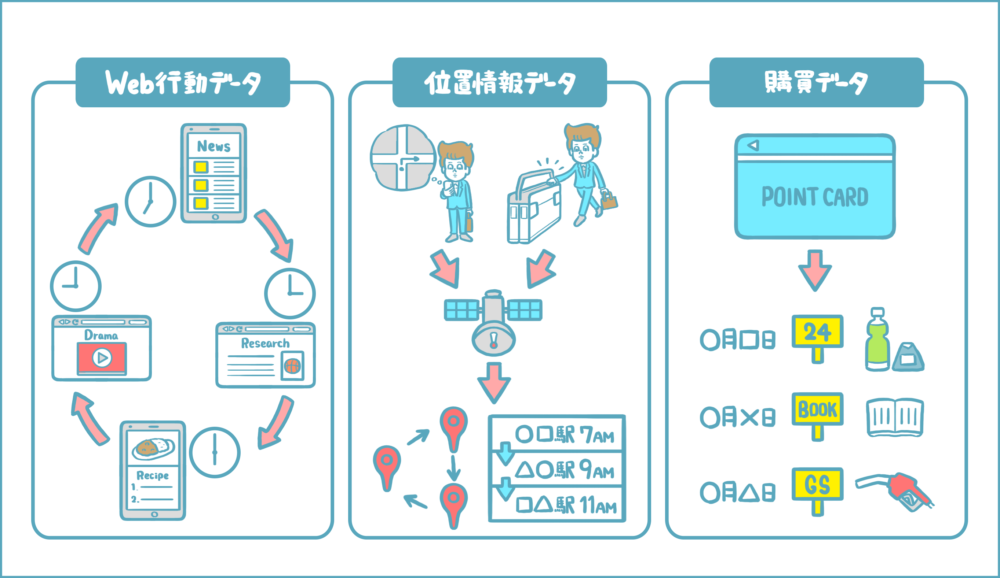

マーケティングとは、「消費者が商品を購入するまでに、企業が行う取り組みや働きかけ」
その中で、 デジタルマーケティングとは、マーケティング活動にデータを掛け合わせることがその大きな特徴。
近年では技術の進化によって、一人ひとりのデータを細かく取得できるようになる。さらに、取得したデータをもとに消費者一人ひとりに違ったアプローチをすることも可能になる。私たちが毎日使っているスマートフォンをはじめ、テクノロジーの普及がデジタルマーケティングの普及も後押ししている。
デジタルマーケティングと聞いて、YoutubeやInstagramを見ているときに目にするCMやバナー広告を想像しるかもしれないが、。 これだけではデジタルマーケティングとは呼べない。単にデジタル上のスペースを使っているだけであれば、従来のテレビや雑誌を使った広告と同じ。 逆に、データをうまく取得・分析することができれば、テレビや雑誌といった以前からある媒体でも、デジタルマーケティングの手法として活用することができる。
蓄積したデータの分析によって「広告を見た人がどんな反応したのか」「反応に合わせて、次にどのようなアプローチをするか」などを考え、実行に移せる点がデジタルマーケティングの本当の価値といえる。 取得できるデータは日々増えている。例えば、どんな記事や商品ページを見ているかが分かるweb行動データや、どんなエリアで行動しているかが分かる位置情報データ、ポイントカードの利用履歴などに紐付いた購買データなど。企業はこれらのデータを蓄積して、マーケティング施策に活用していく。